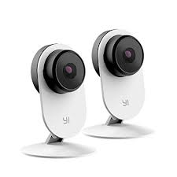

Nama Kelompok
Indri Sri Wahyuni 161113605
Stevi Stince 161114139
Rina Yulianda Damanik 161110854
Hesty Sinaga 161113486
Sejarah Yi Camera
Teknologi YI didirikan pada 1 Februari 2014 oleh Sean Da dan berkantor pusat di Shanghai Cina. Teknologi Xiaoyi atau Yi ini merupakan anak perusahaan dari Xiomi.Pada 2018, YI Technology bermitra dengan Google untuk memproduksi YI Horizon VR180, kamera pasar VR180 pertama Google. Selanjutnya Yi baru mulai menciptakan jenis camera CCTV yang lain,salah satunya adalah Yi Home Camera.
Sekarang Xiaomi sudah mempunyai nama besar di dunia untuk bidang gadget. Namun, sepertinya dunia gadget saja tidak cukup untuk Xiaomi. Xiaomi kemudian merambah ke dunia CCTV serta kamera.
APA ITU YI HOME CAMERA ?
CCTV terbaru yang diperkenalkan pada CES 2019, yakni Yi Home Camera. Ini merupakan generasi ketiga dari Yi Home Camera yang saat ini memiliki pengembangan dalam fitur AI. Fitur ini membuat perangkat memiliki pemberitahuan yang lebih cerdas, di mana ide di baliknya adalah bahwa ia hanya akan memberi tahu pengguna tentang hal-hal yang dianggapnya penting, dibandingkan diberi tahu tentang segala hal yang kurang penting atau spam
TENTANG YI HOME CAMERA
Yi Home Camera adalah CCTV yang dapat dilihat secara online di android. di mana ia akan dapat menangkap apa yang terjadi di rumah atau ditempat yang telah terpasang camera Yi Home Camera. Ini akan mampu menangkap kualitas video Full HD 1080p yang disimpan ke cloud. Itu juga akan dapat mendeteksi objek dan suara.
Yi Home Camera hadir dalam balutan warna putih doff yang halus dan mudah menyatu dengan lingkungan sekitar. Desainnya juga terbilang minimalis dan modern. Dibandingkan kebanyakan IP Camera pada umumnya, perangkat ini punya dimensi yang sangat ramping sehingga tidak akan memakan banyak tempat.
TENTANG YI HOME CAMERA

Yi Home Camera memiliki magnet di bagian dasar agar bisa dengan mudah dipasang dan ditempel pada suatu permukaan. Dengan begitu tidak perlu repot-repot mengebor lubang untuk memasang perangkat ini.
Dengan desain seperti itu, bagian utama dari Yi Home Camera 3 terlihat sangat menonjol sekali. Pada bagian depan tentu saja ada lensa kamera yang dilengkapi infra merah dan lampu indikator perangkat sedangkan pada bagian belakangnya terdapat slot microSD, port microUSB, speaker, mikrofon, dan tombol reset.
Yi Home Camera akan berfungsi kurang lebih seperti pendahulunya di mana ia akan dapat menangkap apa yang terjadi di rumah. Ini akan mampu menangkap kualitas video Full HD 1080p yang disimpan ke cloud. Itu juga akan dapat mendeteksi objek dan suara, namun seperti diketahui dengan AI beberapa hal yang tak penting akan dilewatkan. Hal yang tak penting, termasuk rangsangan yang berpotensi memicu deteksi objek atau suara, seperti serangga terbang, foto, hewan peliharaan berjalan di sekitar rumah, pergerakan sinar cahaya, dan sebagainya. Yi Home Camera diberikan langganan uji coba 6 bulan gratis ke layanan penyimpanan cloud.
YI Home Camera
Sejarah Yi Home Camera
Teknologi YI didirikan pada 1 Februari 2014 oleh Sean Da dan berkantor pusat di Shanghai , Cina .
Teknologi Xiaoyi atau Yi ini merupakan anak perusahaan dari Xiomi.
Pada 2018, YI Technology bermitra dengan Google untuk memproduksi YI Horizon VR180, kamera pasar VR180 pertama Google.
Selanjutnya Yi baru mulai menciptakan jenis camera CCTV yang lain,salah satunya adalah Yi Home Camera.
Sekarang Xiaomi sudah mempunyai nama besar di dunia untuk bidang gadget. Namun, sepertinya dunia gadget saja tidak cukup untuk Xiaomi. Xiaomi kemudian merambah ke dunia CCTV serta kamera.
Fitur Yi Home Camera
Yi Home Camera sangat cocok untuk digunakan dalam memantau dan mengontrol keadaan rumah Anda kapan saja dan di mana saja karena :
- Kualitas video HD 720 P.
- dilengkapi dengan lensa 111° wide-angle glass.
- dilengkapi dengan fitur infrared
- Jangkauan camera hingga 5 meter
- Video dapat langsung disimpan pada micro SD
- Merekam vidieo secara Real Time
- Aplikasi Yi Home dapat diakses oleh pengguna android dan ios
Kelebihan Yi Home Camera
- Harga yang terjangkau.
- Adanya pengawasan saat malam hari.
- Pendeteksi gerakan secara otomatis.
- Lensa yang cukup luas, pada kamera YI lensa yang cukup luas dimilikinya.
- Dapat dipindahkan atau pun dibawa.
Kelemahan Yi Home Camera
- Lebih gampang di sabotase karena ketika power di putus, otomatis tidak akan berfungsi.
- Memerlukan waktu untuk buffer video. Memerlukan waktu berulang-ulang untuk buffer karena kecepatan internet juga sangat mempengaruhi dalam hal ini.
- Menu aplikasi atau pun tulisan masih dalam bahasa China. Sehingga mau tidak mau kita harus menerka-nerkanya sendiri setelah melakukan pembelian.
Cara Menggunakan Kamera Yi Home
- Pertama tempatkan CCTV YI Home Camera di area ruangan yang ter-cover dengan WiFi, lalu nyalakan kamera YI Home dengan cara menghubungkan kabel ke port micro USB di bagian belakang CCTV ke stopkontak.
- Download dan install aplikasi “YI HOME” di App Store untuk iPhone dan Google Play Store untuk Android. Alternatif lainnya, Anda dapat menggunakan scan barcode yang terdapat di buku panduan.
- Masukkan data login Anda. Jika Anda belum memiliki akun YI HOME, Anda dapat membuat akun dengan pilih “New to YI?” atau login dengan akun Facebook Anda.
- Langkah selanjutnya adalah proses menghubungkan CCTV YI Home ke smartphone. Caranya pada layar home, klik tanda (+) di sebelah kanan atas layar smartphone. Pilih YI Home Camera, selanjutnya klik “I heard waiting to connect”. Setelah itu hubungkan smartphone dengan jaringan WiFi. Masukkan SSID dan password WiFi Anda, jika sudah klik “Connect to Wi-Fi”.
Cara Menggunakan Kamera Yi Home (2)
- Setelah itu akan muncul tampilan menu barcode, kemudian arahkan CCTV YI Home ke barcode yang ada di smartphone, CCTV YI Home akan secara otomatis mengenali dan mendeteksi barcode-nya. Jika berhasil terdeteksi, maka lampu kamera CCTV YI Home akan berkedip berwarna biru. Kemudian klik “Next” dan tunggu proses terhubungnya perangkat tersebut kurang lebih 1 menit.
- Jika proses menghubungkan CCTV YI Home ke smartphone sukses, langkah selanjutnya berikan label atau nama kamera CCTV sesuai keinginan Anda.
- Setelah itu, Anda akan dibawa ke menu utama YI HOME. Anda tinggal membuka tampilan CCTV yang sudah diberi nama tadi. Untuk kualitas gambar, tergantung pengaturan dan kecepatan internet Anda. Jika kecepatan internet stabil, hasil gambar juga akan lebih jelas dan tajam. Selanjutnya Anda bisa setting dan eksplor sendiri menu-menu yang tersedia sesuai keinginan. Pada menu setting Anda bisa mengaktifkan fitur night vision, Motion Tracking, dan lainnya.
Cara Install
- Pertama, Nyalakan Yi Cam tanpa SDCARD!
- Kemudian Tekan Tombol Reset Selama 6 Detik
- Tunggu sekitar 5 Menit
- Setelah camera berkedip-kedip berwarna kuning dan berbunyi bahasa china, Matikan kamera dengan mencabut USB Powernya
- Setelah itu siapkan SDcard
- Format SDcard dengan format FAT32
- Setelah itu, Extract firmware yang telah di download kemudian cari file home yang berukuran sekitar 7-8 MB kemudian copykan dan taruh di sdcard
Cara Install (2)
- Ingat! taruh diluar, jangan di dalam folder. Jadi di sdcard hanya ada file home
- Kemudian tancapkan sdcard ke Yi Home Camera kemudian nyalakan
- Tunggu sekitar 5-10 menit hingga firmware berhasil di flash
- Jika berhasil, Camera akan berkedip-kedip pelan berwarna kuning dan berbunyi dalam bahasa inggris, bukan china
- Nah, jika sudah. Matikan Yi Home Camera kemudian cabut sdcard dan colokan ke komputer, setelah terbaca, hapus file home tadi, kemudian masukan lagi ke camera dan nyalakan
- Sekarang Yi Home Camera siap digunakan
Harga Kamera YI Home
Rp 599.000
- Free pelatihan untuk cara pemakaian (di showroom)
- 110 degree wide-angle lens,
- Support Micro SD card up to 32GB
- IR Infared Night Vision
- HD resolution 1280×720 pixel
- 111 wide-angle
- 4x optical zoom
- Two-way audio communication
- Motion Detection
- Custom Alert Schedule
- International Version
- Garansi Resmi 1 Tahun
Kesimpulan
Di tengah gempuran berbagai produk IP CCTV baru di pasaran, kamera YI Home masih sangat layak untuk dipertimbangankan dalam memonitor baik itu rumah maupun aktivitas orang-orang di dalamnya. Harga yang relatif murah, Fitur-fitur beserta opsi langganan cloud yang ada pada kamera ini memberikan kemampuan monitoring yang lebih handal untuk pengguna rumahan yang ingin membangun sistem keamanan sederhana dengan budget terbatas. Beberapa hal yang mungkin bisa menjadi pertimbangan Sahabat sebelum memutuskan untuk memilih produk ini adalah masalah jaminan keamanan privasi yang belum terbukti dan tidak adanya authorized agen/service center di Indonesia untuk jaminan aftersales.
s